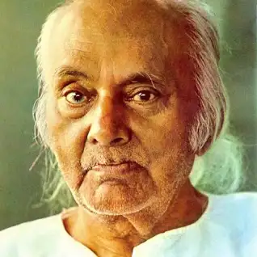

Rebel Poet
Kazi Nazrul Islam is the national poet of Bangladesh who is especially recognized as Bidrohi Kobi (rebel poet) around the country. Nazrul is a famous poet, musician and philosopher of Bangladesh. The famous poet Nazrul's writings dealt with the revolution of that period of the British government. His revolutionary attempt helped him to be a national poet of Bangladesh. He has raised his voice against any kinds of fascism and oppression and got popularity swiftly around the Indian Subcontinent.
Awesome Writer
Nazrul's writings explored themes such as love, freedom, humanity, and revolution. He opposed all forms of bigotry and fundamentalism, including religious, caste-based and gender-based. Throughout his career, Nazrul wrote short stories, novels, and essays but is best known for his songs and poems. He pioneered new music forms such as Bengali ghazals. Nazrul wrote and composed music for nearly 4,000 songs (many recorded on HMV and gramophone records), collectively known as Nazrul Geeti.
"Love has no meaning or amount." - Kazi Nazrul Islam
Awards
Jagattarini Gold Medal
From the University of Calcutta for his work in Bengali Literature, 1945
Padma Bhushan
One of the highest civilian honors of the Republic of India, 1960
National Poet
Conferred the title by the Government of Bangladesh
Ekushey Padak
Bangladesh’s highest civilian honors, 1976
Poetry
- Agnibina (The Fiery Lute), 1922
- Sarbahara (The Proletariat), 1925
- Puber Hawa (The Eastern Wind), 1931
- Natun Chand (The New Moon), 1939
Poems and songs
- Dolan Chapa (Name of a faintly fragrant monsoon flower), 1923
- Chittanama (The Place of Consciousness), 1923
- Bandhan Hara (The Unfettered), 1927
- Sindhu Hindol (The Undulation of the Sea), 1927